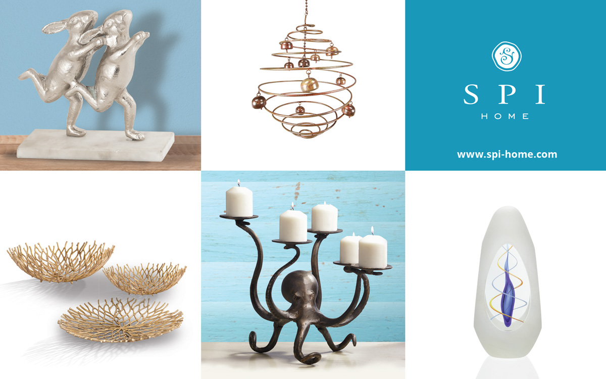

I design and pre-press print ads for SPI in several trade magazines and tradeshow special editions, notably Lawn & Garden Retailer and Gift & Decorative Accessories. Ads require frequent last minute adjustments to accomodate new product developments, inventory status, or I choose to feature products reflecting an issue's main article. Our team produces several choices for each ad, with the vice president having final decision on which design goes to press.
 I strive to present a combination of product in lifestyle settings and as stand-alone silhouettes. I pay key attention to seasonal themes for wholesale buyers and research key trends in retail presentation before designing an advertisement.
I strive to present a combination of product in lifestyle settings and as stand-alone silhouettes. I pay key attention to seasonal themes for wholesale buyers and research key trends in retail presentation before designing an advertisement.